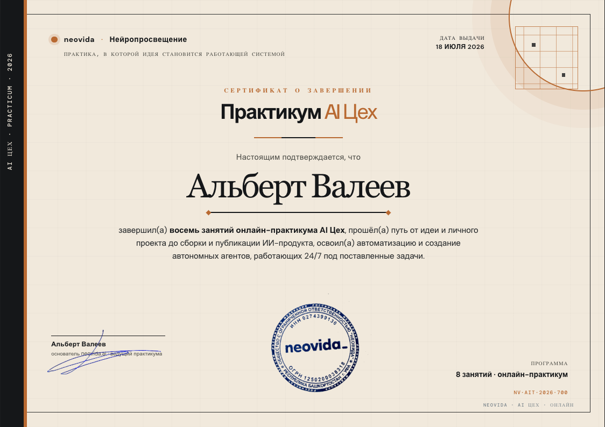

Не «пробовали ИИ».
Собирали систему.Финальная встреча · после 8 уроков
Перед тестом собираем честную карту: Codex, дизайн, автоматизация и отдельный класс автономных агентов.
Не один агент.
Пять рабочих контуров.
Курс менял не только инструменты, но и сам класс системы. Codex и автономный Hermes — не две версии одного агента.
Из чата —
в рабочего агента.
Мы перестали смотреть на ИИ как на собеседника. Настроили Codex под свой контур и научились давать первый управляемый запрос.
Из папки —
в публичную ссылку.
Проект существует не только на вашем компьютере. Мы прошли весь путь до результата, который можно открыть и проверить снаружи.
Из идеи —
в понятный чертёж.
Перед сборкой мы научились распаковывать замысел: контекст, задачу, ограничения, сверку понимания и исследование готовых решений.
Из чертежа —
в первую работающую версию.
Продолжили одну цепочку: идея превращается в нормальное задание, затем в первый экран и понятное действие после кнопки.
Из одного окна —
в рабочую среду.
Не начинали заново. Продолжали свой проект в более взрослой среде: видели файлы, экран и один следующий шаг без лишнего разгона.
Из задачи —
в повторяемый процесс.
Мы увидели шесть режимов, в которых агент помогает с обычной работой: не вместо человека без контроля, а внутри ясного процесса.
Не продолжение Codex.
Другой класс агента.
Мы перешли к Hermes: отдельной системе, которая живёт на VPS, доступна через Telegram и может работать без открытой сессии на ноутбуке.
Докручивали уже Hermes.
Память, знания, команда.
На восьмом уроке не создавали ещё одного агента. Мы усиливали автономного Hermes: дали ему личность, долговременную базу знаний, новые навыки и временных помощников.
Контроль остаётся
у человека.
Эта логика сохраняет контроль в обоих классах: и в рабочей среде Codex, и у автономного Hermes.
Пусть агент покажет, какие данные, файлы, сообщения или страницы он видит. Без изменений.
Пусть объяснит, что именно сделает, с какими данными и какой результат вернёт.
Отправка, удаление, публикация, CRM и платежи — только после отдельного явного подтверждения.
Не список инструментов.
Способ управлять работой.
Главный навык
Превращать смутную задачу в понятный контур, который агент может собрать и проверить вместе с вами.Формулировать
Объяснять цель, контекст, ограничения и ожидаемый результат человеческим языком.
Продолжать
Двигать проект маленькими проверяемыми шагами, а не стартовать каждый раз с нуля.
Держать контроль
Проверять, ограничивать доступы и отделять черновик от внешнего действия.
Вспомните не слова.
Вспомните решения.
Тест проверяет применение
Не нужно вспоминать определения ради определений. Нужно узнать правильный ход в знакомой рабочей ситуации.
30 вопросов.
Три слоя практики.
Вопросы собраны по логике курса: как вы ставите задачу, собираете проект и отдаёте повторяемую работу агенту.
Агент и публикация
Prompt, skill, plugin, localhost, commit, push, deploy и проверка ссылки.
Контекст и продукт
Исследование, план, дизайн-бриф, макет, логика, frontend, backend и JavaScript.
Автоматизация и Hermes
Шесть режимов Codex, cron, фон, VPS, SOUL, Obsidian, /learn и субагенты.
Ситуация → решение
Выбираете лучший следующий шаг, а не угадываете сухой технический термин.
Спокойно. По памяти.
По рабочей логике.
Если вопрос вызывает сомнение, вернитесь мысленно к цепочке: прочитать → спланировать → сделать → проверить.
Готовы проверить
свой рабочий контур?
Откройте участнический экран и введите имя. Вопросы, таймер, карта и сертификат будут переключаться у всех из панели ведущего.
ОТКРЫТЬ LIVE · 30 ВОПРОСОВНе просто балл.
Карта на 30 дней.
После разбора ведущий запускает пятиминутную карту. У каждого на экране появляются три коротких поля.

Результат —
это новая точка опоры.
Сертификат фиксирует пройденный маршрут. Важнее него — проект, который вы можете продолжать, и процессы, которыми теперь управляете осознанно.
Тест завершён.
Теперь — мастер-класс.
Не смешиваем итоги курса с новой темой. Сначала фиксируем пройденное, затем открываем отдельную презентацию следующего уровня.